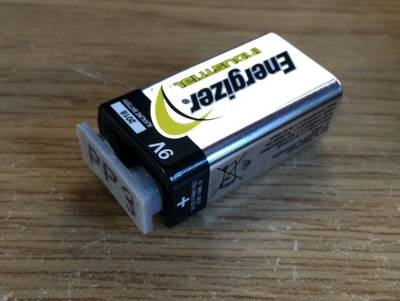
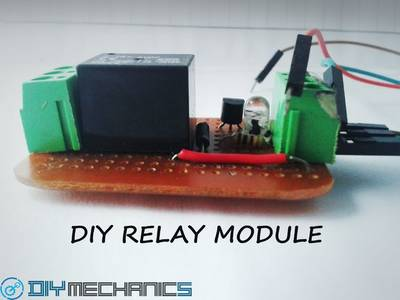
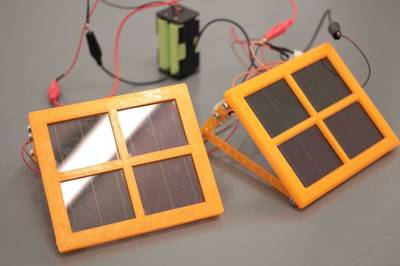

2016-06-23 - Nº 60

Editorial
Esta é a Newsletter Nº 60 que se apresenta com o mesmo formato que as anteriores. Se gostar da Newsletter partilhe-a!
Todas as Newsletters encontram-se indexadas no link.
Esta Newsletter tem os seguintes tópicos:
Esta semana foi apresentado o primeiro Chip com 1000 processadores independentes programáveis. Uma equipa da universidade da Califórnia apresentou o referido Chip designado por “KiloCore” que entre outras funcionalidades é um eficiente energeticamente e tem um rácio computacional máximo de 1.78 mil milhões de instruções por segundo e contem cerca de 621 milhões de transístores. Está disponível ao público em geral o editor online "Arduino Web Editor" que permite escrever código e enviá-lo para qualquer placa Arduino ou Genuino directamente do browser. Na edição do TOP 500 das maquinas mais potentes, a China continua a dominar e no primeiro lugar encontra-se um novo sistema designado por Sunway TaihuLight construído totalmente com processadores fabricados na China. Este sistema, desenvolvido pelo centro Nacional de Pesquisa de Tecnologia e Engenharia de Computadores Paralelos (NRCPC) atinge 93 petaflop/s no benchmark LINPACK.
Na Newsletter desta semana apresentamos diversos projetos de maker. Na rubrica "Documentação" apresentamos seis livros (eBooks) que podem ser descarregados livremente e que esta semana são sobre Guia de Estudo para obter a Licença de Rádio-amador, Introdução ao Windows Server 2012 R2, o ciclo de via da segurança, algoritmos numéricos, Compilação de Truques e Dicas pela Microchip e introdução ao Windows Server 2016 TP.
A MakerFaire Lisboa começa já a aquecer esta sexta-feira e estará aberta ao público nos dias 25 e 26 de Junho. O altLab vai lá estar em força com diversos projectos, entre os quais destacam-se a Garra Makey, o altLapse, o HackyRacers, o detector de obstáculos para invisuais, o Cantaro entre outros. A feira realiza-se no pavilhão do conhecimento no parque das Nações e podem obter os bilhetes neste link (São grátis mas obrigatórios).
 João Alves ([email protected])
João Alves ([email protected])
O conteúdo da Newsletter encontra-se sob a licença  Creative Commons Attribution-NonCommercial-ShareAlike 4.0 International License.
Creative Commons Attribution-NonCommercial-ShareAlike 4.0 International License.
Projetos do altLab na Maker Faire Lisboa de 2016
A Garra Makey é um projeto de hacking tipo interface, do colectivo altLab, desenhado para expor os membros e a comunidade à comunicação entre micro-controladores usando diversos interfaces (i2c, serial, etc). O objectivo é espevitar a criatividade e levar as pessoas e os makers a repensar os interfaces de interacção com o mundo real pelo uso de micro-controladores. Trata-se de um sistema aberto que convida à criação de outros interfaces além dos que já foram feitos, como o controlo remoto, o joystick e o capacete wireless.
O AltLapse é uma versão motorizada de um sistema de "Timelapse" baseada em Arduino e Raspberry PI. Dotado de um interface web, permite gerir o funcionamento do sistema de timelapse, acrescentando a capacidade de durante o mesmo podermos executar movimentos de Pan e Tilt da câmara. Impresso numa impressora 3D este sistema permite adaptar-se a qualquer tipo de câmara.
O HackyRacers é uma plataforma qu tem como objectivos ser uma componente lúdica que se expressa pela frase “Realizamos a virtualidade”, onde se pretende jogar duma forma diferente e com uma perspectiva outofthebox e ser uma plataforma educativa que terá dois vectores. O D.I.T. e o desafiarte a ti próprio , onde podemos criar desafios e vencêlos, procurando e aprendendo. Vamos criar um contador de voltas? Qual o melhor processo para o fazer? Magnético, Óptico, contacto? e ser uma plataforma pedagógica onde podemos demonstrar os efeitos da velocidade centrifuga ou qual a diferença entre o mundo simulado e o mundo real.
O detector de obstáculos para invisuais pretende ser uma ajuda na detecção de obstáculos acima da zona da cintura, permitindo ao invisual circular de forma mais segura, evitando o choque com objectos ao nível da cabeça e peito, zonas onde a bengala não é eficaz. Ao circular o utilizador recebe feedback através de vibração sempre que um obstáculo é detectado, sendo que essa vibração aumenta conforme a proximidade. Não se pretende substituir a bengala, antes complementar o seu uso através de um wearable.
Novidades da Semana ^
World’s First 1,000-Processor Chip
"A microchip containing 1,000 independent programmable processors has been designed by a team at the University of California, Davis, Department of Electrical and Computer Engineering. The energy-efficient “KiloCore” chip has a maximum computation rate of 1.78 trillion instructions per second and contains 621 million transistors. The KiloCore was presented at the 2016 Symposium on VLSI Technology and Circuits in Honolulu on June 16."
Share your sketches on the Arduino web editor
"Announced back at Maker Faire Bay Area, the Arduino Web Editor is a new online tool that enables users to write code and upload sketches to any Arduino or Genuino board directly from the browser."
New Chinese Supercomputer Named World’s Fastest System on Latest TOP500 List
"China maintained its No. 1 ranking on the 47th edition of the TOP500 list of the world’s top supercomputers, but with a new system built entirely using processors designed and made in China. Sunway TaihuLight is the new No. 1 system with 93 petaflop/s (quadrillions of calculations per second) on the LINPACK benchmark. Developed by the National Research Center of Parallel Computer Engineering & Technology (NRCPC) and installed at the National Supercomputing Center in Wuxi, Sunway TaihuLight displaces Tianhe-2, an Intel-based Chinese supercomputer that has claimed the No. 1 spot on the past six TOP500 lists."
Outras notícias
- In mapping eclipses, world's first computer maybe also told fortunes
- Microchip Announces Next-Generation Bluetooth® Low Energy Solutions with Easy-to-Use Interface and Embedded Scripting Capability
- Micro-supercapacitor fits inside IoT chips
- Cypress Enables IoT Developers to Easily Create Tiny, Solar-Powered Sensor Beacons that Wirelessly Transmit Data on their Surrounding Environment
- RapidIO.org Announces the Public Release of the Next Generation 25xN 100Gbps RapidIO Specification
Ciência e Tecnologia ^
Parallelizing common algorithms
"Every undergraduate computer-science major takes a course on data structures, which describes different ways of organizing data in a computer’s memory. Every data structure has its own advantages: Some are good for fast retrieval, some for efficient search, some for quick insertions and deletions, and so on. Today, hardware manufacturers are making computer chips faster by giving them more cores, or processing units. But while some data structures are well adapted to multicore computing, others are not. In principle, doubling the number of cores should double the efficiency of a computation. With algorithms that use a common data structure called a priority queue, that’s been true for up to about eight cores — but adding any more cores actually causes performance to plummet."
3-D printed polymer turns methane to methanol
"Lawrence Livermore National Laboratory scientists have combined biology and 3-D printing to create the first reactor that can continuously produce methanol from methane at room temperature and pressure. The team removed enzymes from methanotrophs, bacteria that eat methane, and mixed them with polymers that they printed or molded into innovative reactors. The research, which could lead to more efficient conversion of methane to energy production, appears in the June 15 edition of Nature Communications."
Scientific Gains May Make Electronic Nose the Next Everyday Device
"Researchers at the Texas Analog Center of Excellence (TxACE) at UT Dallas are working to develop an affordable electronic nose that can be used in breath analysis for a wide range of health diagnosis. While devices that can conduct breath analysis using compound semiconductors exist, they are bulky and too costly for commercial use, said Dr. Kenneth O, one of the principal investigators of the effort and director of TxACE. The researchers determined that using CMOS integrated circuits technology will make the electronic nose more affordable. CMOS is the integrated circuits technology used to manufacture the bulk of electronics that have made smartphones, tablets and other devices possible. "
-
"An international team of scientists have found a potentially viable way to remove anthropogenic (caused or influenced by humans) carbon dioxide emissions from the atmosphere – turn it into rock. The study, published today in Science, has shown for the first time that the greenhouse gas carbon dioxide (CO2) can be permanently and rapidly locked away from the atmosphere, by injecting it into volcanic bedrock. The CO2 reacts with the surrounding rock, forming environmentally benign minerals. "
Multi-material fluidic actuators
"Soft fluidic actuators consisting of elastomeric matrices with embedded flexible materials (e.g. cloth, paper, fiber, particles) are of particular interest to the robotics community because they are lightweight, affordable and easily customized to a given application. These actuators can be rapidly fabricated in a multi-step molding process and can achieve combinations of contraction, extension, bending and twisting with simple control inputs such as pressurized fluid. In our approach is to use new design concepts, fabrication approaches and soft materials to improve the performance of these actuators compared to existing designs. In particular, we use motivating applications (e.g. heart assist devices, soft robotic gloves) to define motion and force profile requirements. We can then embed mechanical intelligence into these soft actuators to achieve these performance requirements with simple control inputs."
Google DeepMind and FHI collaborate to present research at UAI 2016
"Oxford academics are teaming up with Google DeepMind to make artificial intelligence safer. Laurent Orseau, of Google DeepMind, and Stuart Armstrong, the Alexander Tamas Fellow in Artificial Intelligence and Machine Learning at the Future of Humanity Institute at the University of Oxford, will be presenting their research on reinforcement learning agent interruptibility at UAI 2016. The conference, one of the most prestigious in the field of machine learning, will be held in New York City from June 25-29. The paper which resulted from this collaborative research will be published in the Proceedings of the 32nd Conference on Uncertainty in Artificial Intelligence (UAI). Orseau and Armstrong’s research explores a method to ensure that reinforcement learning agents can be repeatedly safely interrupted by human or automatic overseers. This ensures that the agents do not “learn” about these interruptions, and do not take steps to avoid or manipulate the interruptions. When there are control procedures during the training of the agent, we do not want the agent to learn about these procedures, as they will not exist once the agent is on its own. This is useful for agents that have a substantially different training and testing environment (for instance, when training a Martian rover on Earth, shutting it down, replacing it at its initial location and turning it on again when it goes out of bounds—something that may be impossible once alone unsupervised on Mars), for agents not known to be fully trustworthy (such as an automated delivery vehicle, that we do not want to learn to behave differently when watched), or simply for agents that need continual adjustments to their learnt behaviour. In all cases where it makes sense to include an emergency “off” mechanism, it also makes sense to ensure the agent doesn’t learn to plan around that mechanism."
Documentação ^
A documentação é parte essencial do processo de aprendizagem e a Internet além de artigos interessantes de explorar também tem alguma documentação em formato PDF interessante de ler. Todos os links aqui apresentados são para conteúdo disponibilizado livremente pelo editor do livro.
Livros
No-Nonsense Technician Class Amateur Radio License Study Guide
"This manual will help you get your license, but getting your license is only the beginning. There is still much to learn, and to get the most out of amateur radio, you will have to continually learn new things. This study guide will teach you the answers to the test questions, but will not give you a deep understanding of electronics, radio, or the rules and regulations. That will be up to you after you get your license. I hope that by helping you get your license that you’ll be encouraged to become an active radio amateur and get on the air, participate in public service and emergency communications, join an amateur radio club, and experiment with radios, antennas, and circuits. These are the activities that will really help you learn about radio in depth, and in the end, help you be confident in your abilities as an amateur radio operator."
Introducing Windows Server 2012 R2
"Get a head start evaluating Windows Server 2012 R2—with technical insights from a Microsoft MVP and members of the Windows Server product team. Based on final Windows Server 2012 R2 release-to-manufacturing (RTM) software, this guide introduces new features and capabilities, with scenario-based advice on how the platform can meet the needs of your business. Get the high-level overview you need to begin preparing your deployment now."
The Security Development Lifecycle
"Microsoft’s Security Development Lifecycle (SDL) is a software development process that helps developers build more secure software and address security compliance requirements while reducing development costs. This ebook, first published in 2006, was Microsoft’s first description of the SDL, and although this ebook isn’t an absolutely up-to-date description of the SDL—you can find that here—it is still full of useful information, including descriptions of many of the SDL’s core practices: threat modeling, banned functionality, fuzz testing, bug bars, correct cryptographic design, and more."
-
"Numerical Algorithms: Methods for Computer Vision, Machine Learning, and Graphics presents a new approach to numerical analysis for modern computer scientists. Using examples from a broad base of computational tasks, including data processing, computational photography, and animation, the textbook introduces numerical modeling and algorithmic design from a practical standpoint and provides insight into the theoretical tools needed to support these skills. The book covers a wide range of topics―from numerical linear algebra to optimization and differential equations―focusing on real-world motivation and unifying themes. It incorporates cases from computer science research and practice, accompanied by highlights from in-depth literature on each subtopic. Comprehensive end-of-chapter exercises encourage critical thinking and build students’ intuition while introducing extensions of the basic material."
Compiled Tips 'N Tricks Guide - Microchip
"Lots of hardware & software tricks, obviously examples use the PIC, but many can be applied to other microcontrollers."
Introducing Windows Server 2016 Technical Preview
"Get a head start evaluating Windows Server 2016—guided by the experts. Based on Technical Preview 4, John McCabe and the Windows Server team introduce the new features and capabilities, with practical insights on how Windows Server 2016 can meet the needs of your business. Get the early, high-level overview you need to begin preparing your deployment now!"
Modelos 3D ^
Com a disponibilidade de ferramentas que permitem dar azo a nossa imaginação na criação de peças 3D e espaços como o thingiverse para as publicar, esta rubrica apresenta alguns modelos selecionados que poderão ser úteis.
Cap for PP3 battery

Cap for PP3 batteries to prevent shorting out when stored with other batteries/metal tools.
Switch Holder
This is a switch holder for 5 switch 6mm diameter
Maker Faire Robot Action Figure (Single file)
The world needs a New Hero : The French Maker!
le FabShop organises the first PARIS MAKER FAIRE (June 21st and 22nd). http://www.makerfaireparis.com/
To celebrate that, our creative director, Samuel N. Bernier, designed a very clever and cute version of the MAKER FAIRE ROBOT. It is fully articulated, with a total of 11 axis, printed all at once. If you liked our little elephant, you will LOVE this FFF 3D printing exploit!
See you in Paris for the most stylish Maker Faire ever.
Projetos Maker ^
Diversos Projetos interessantes.
Adding Bluetooth 4.0 to your Arduino Project - Controlled by Smartphone
"Arduino is a cool platform because you can easily interact with your projects from your computer. But in 2015, adding the ability to control your project from your smartphone is necessary to creating a viable product. With wireless capability, the variety of projects you can do increases exponentially. This guide will be the first part in a series that will allow you to get an unprecedented level of control over your Arduino projects from your smartphone. Sections titled "(Extra)" are not necessary to complete the project. They do, however, provide supplementary information that can help in overall comprehension."
Electromechanical rotary encoder
"The rotor of this electromechanical rotary encoder is composed of three resistors having 560, 1000 and 2200 Ohms soldered on a washer. One wiper makes steady contact with the washer, pulling the potential to ground while the second contact is connected to the +5V pin of an Arduino through a 1 kiloohms resistor. We get a reading of 5000mV, thus 5V whenever the switch is open. If the switch gets closed through the 560 Ohms resistor, a voltage divider composed of a 1 kiloohm and a 560 ohms resistor at 5V input voltage is formed. In theory we get a voltage drop of 1.79V across the 560 ohms resistor."
Raspberry Pi Smart Doorbell: Who's at My Door?
"This project is intended to replicate some of the smart doorbells that are on the market. This version will detect when someone has touched the doorknob or doorbell and either tweet, text, or email a picture of the person at the door. The photo will be taken with a Raspberry Pi camera through the door viewer (peep hole). I am going to post the hardware instructions and some basic code and then your code will vary depending on whether you want to email, tweet, or text the results to yourself. There are many different ways to do that and I cannot cover them all here."
Automatic Watering System / Automatization Machine
"My device is automatic watering system (you can switch on/off water solenoid but also instead of solenoid you can switch anything else which use alternate current - it means that my device is also universal automatization machine). My idea was born when I was watering my terrace garden and I discovered that the temperature of floor (made from concrete brick) is too high. Hot floor was heating the air to very hight temperature. Because my garden plants don't like hot temperatures I must cool the floor with cold water. Also I must water my terrace garden everyday. So that's the reason why I have made this machine which will do all the mentioned things for me."
How to Build a Control Circuit with Adjustable Working Time via Wi-Fi
"You can implement this system in environments where you need to set your DC load for a specific time. This will allow you to use our Android application without any need for a hardware interface, keypad, and LCD screen."
-
"In this instructables, I will show you how to make a simple/minimalistic led clock. The clock shows 3 dots. One from the seconds (blue), one for the minutes (yellow) and one for the hours (red)."
3D Body for Small Unmanned Ground Vehicle
"This small chassis was made to use with the nRover board that I designed, but it's possible to use with Arduino Uno because both boards have the same size and fixation holes. The main idea was to make a chassis multipurpose, to built a line follower, unmanned ground or vehicle to avoided obstacle with infrared sensors, finally a small chassis to learning robotics with cheap and easy to find components in an electronic store."
-
"I recently watched a play and as part of the set they had these very tall and thin display screens which moved around. I wasn't going to be able to replicate the display side of it but I thought it would be cool to see if a light of the same shape would look any good."
-
"I was impressed with two articles on Instructables.com Magic-POV-Wand-yet-another-POV-toy and Persistence-of-Vision-Wand. They have explained in great detail, to build a LED POV and mostly display a name or a message. I did not find just text very interesting ,So I drew some Alien UFO and Faces in Green..... To Reduce form factor I used Arduino Nano instead of Uno"
-
"A device that can be used to control up to 4 different Hydroponic/Aeroponic Systems at once. The device will control the components of the system and will display notification to a LCD screen and allow the user to customize settings via Bluetooth. This system will be user friendly and optimized for fast growing so that even the least experienced user can grow lettuce with minimal maintenance required."
-
"SIMPLE DIY LED CLOUD LAMP. Easy to do and very amazing to look at. "
-
"Tetrix MAX robot that delivers candy. "
Light Intensity Computation Using BH1715 and Arduino Nano
"Yesterday we were working on LCD displays, and while working over them we realized the importance of light intensity computation. Light intensity is not only important in the physical domain of this world but it has its well said role in the biological domain too. Accurate estimation of light intensity plays a pivotal role in our ecosystem, in growth of plants etc. So, for serving this purpose we studied this sensor BH1715, which is a 16-bit serial output type ambient light sensor. In this tutorial, we are going to demonstrate the working of BH1715 with Arduino Nano."
-
"If you've got an adventure cat, you'll want to sew him this LED vest so that you can go on nighttime adventures. Camping with cats?! Yes!"
Arduvision (II): OV7670 + FIFO module and arduino Mega
"After several people asking for instructions to use an Arduino Mega to interface the ov7670 sensor, I decided to publish a tutorial about it..."
-
"In this instructable i make a mini dremel cutting tool out of a few very cheap and easy to acquire materials. The mini dremel is great for cutting through small pieces of wood, plastic and Styrofoam. Its also portable and wireless which adds to its convenience. Building this is a great intro into the DIY/ hobby world and will also add to your collection of tools."
-

"The reason i come up with this tutorial is last week i needed to make a project so fast(its a urgent project for my college) i needed a relay module to finish the last stage of the project, unfortunately i screwed . there is no relay module left in my garage . So, i went to a local store to buy one but there is no 5 volt or 6 volt relay module.But fortunately they have the relays , i bought so many(hope i can use like this situation in future :D) .then made one myself. Its cheap and easy , you can save a little bit money by making these Diy relay module . At the same time you can use this relay module like a ordinary relay module. I made a single channel but you can make more on a same PCB."
-
"Nowadays many different companies produce data logging systems for racing applications. However, these systems typically start around $200-$300 and go up from there. Today I'll show you how to build a simple acceleration data logger that'll provide you with enough data to begin evaluating your driving technique, aerodynamic and mechanical efficiencies, and even your engine torque. (Calibration info will be in the video)"
-
"The WA2EBY amplifier is a famous linear amplifier project published in QST in March and April 1999 by Mike Kossor WA2EBY. As this amplifier can give up to 50W out with 1W drive, it is a perfect pair for my Softrock RXTX amplifier. The articles can be found on the ARRL-site (search for WA2EBY) and are highly recommended reading. I have had a suitable box laying around for quite some time that was perfect for the amplifier project. I decided to go for Manhattan style construction using mainly the parts I already had in my junk-box and not order the PCBs and toroid set which are available from different sources on Ebay. In other words: a low-cost project."
-
"While writing the article on multiplexing the esps inputs I came up with the idea of PWMing all the outputs at once by interrupting the path to ground with an n-FET. Thats actually not a bad idea, and I have an extra input on the analog MUX that I can use for a light sensor so I can even have auto-dimming. This is to describe how I did that."
-
"This instructable shows you how to construct a fairly simple LED light comprised of a wooden base, four single LED's, and an empty liquor bottle of your choice. This makes for a great decoration or gift for someone special. I added a gel-like substance to the inside of the bottle in order to refract/show the light better."
Electric Wheelchair Controller
"My friend came to me with a simple request. To repair his electric wheelchair after it was damaged by lighning while on charge. The chair was fitted with a Shark controller, and on opening, there were severe flash-overs visible on the controller PC board. Being made of just surface mount components, it was clear that the Shark unit was beyond economical repairs. After trying to get support in South Africa, and many hours of Googling, the cheapest solution was to import the complete controller, harness, and joystick unit. But total cost would have been around ZAR10 000. Money my friend does not have."
Build a 4-Bit Binary Counter with 5x7 LED Matrix
"Traditionally, discrete LEDs are used to display digital data from a binary counter. 4-bit binary patterns of 1s and 0s are deciphered manually using a weighted value method to determine the equivalent decimal number generated by the digital counter. I decided to give a classic digital circuit a new twist by using a 5x7 LED matrix and littleBits' surface mount component (SMC) based electronic modules. With this project, you will learn how to build a binary counter using a 5x7 LED matrix for a new output display appearance. You will learn how to wire a 5x7 LED matrix to display vertical bars that scroll from right to left based on a clock pulse and binary data numbers. Also, littleBits will illustrate how to quickly build new electronic circuits and devices using these unique SMC electronic modules. "
-
"The following sections describe how to build the LEDmePlay with the appearance shown on this site. Feel free to change parts of our design or add extra features, such as additional buttons, a more fancy housing, a smaller LED matrix. Before you start with the reproduction of the LEDmePlay, you need to buy the required electronics parts. The main components are the Arduino MEGA 2560, the RGB LED matrix, and a suitable power supply. Additionally, you need some cables to connect everything. Whether you plan to use the same picture frames that we used for the housing is up to you. The joysticks need not be the same as ours. Any C64 compatible joysticks from the Eighties era should work. What about real arcade controllers inside a small arcade cabinet? Here is the parts list. Unless otherwise stated, you can buy these or compatible parts from any electronics specialist shop. We paid an overall price of approximately 100 EUR."
PM10 Real-time and Forecast Display
"Recently South Korea is directly facing air polution problem - especially with fine dust. But because it became an issue so recently, people open their windows and go out as usual, not checking or knowing that there's a dangerous level of particulate matter outside. So we made an easy-to-understand display which notifies the user of current and future PM10 information when he/she's trying to open the window, regardless of the attention to check the levels. We anticipate this device will help you with the decisions - whether to open the window now or not."
-

"Today I'm going to show you how to make your own electric soil finger! What's an electric soil finger you say? Allow me to explain: This is a sensor for measuring the amount of water in plant soil. This will then in turn show you whether or not it's time to water your plants, or if they are very much happy with the amount of water they have right now! The inspiration for this was that I was constantly sticking my fingers in my plants dirt to learn if I needed to water them. However, this only gave an idea of the water on the very top layer of soil, no good! I wanted a deeper and more quantifiable measurement and thus the Electric Soil Finger was born."
Designing a Mains Frequency Monitor
"This is the first in a series of posts about designing a mains frequency monitor using the Microchip PIC 16F1619 microcontroller. Today we will talk about the features of this device that make it a good choice for such a project. We will also start to piece together our circuit, program, and test a prototype on the breadboard."
Arduino Attiny Programming Shield
"An Attiny is a great alternative to the atmega328, it is for those projects that need few GPIO pins and need to be portable. But unlike the atmgea328 the attiny cannot plug into an Arduino board and be programmed. Another way would be to use a breadboard and an Arduino uno as ISP, but it would be really messy and it would be hard to program it this way multiple times."
Automated Navigation Robot with Gas (MQ-2), Temperature & Humidity (DHT11) Sensors
"Hello everyone! The purpose of this project was to make a robot capable of navigating around obstacles in a room using the ultrasonic module HC-SR04 mounted on a Servo, this allowed the robot to look around to determine the best route to follow once an obstacle had been encountered. This has been done 100's of times so i wanted to mix it up a bit, to do this i wanted to include some additional sensors in combination with a Bluetooth module, this allows the robot to gather environmental condition data then relay it back to an Android Application, from the Android Application you can also change the state of the robot from Navigation mode to idle where the robot will remain stationary but will still transmit sensor data."
Control your robot using hand gestures
"Tired of controlling your robot with joystick ? Ever thought of controlling it with your hand gestures. I wish I could control everything with my hand gestures. Sitting on a chair and controlling things, like a BOSS. I loved the thought of it. So I finally came out with a cool DIY hand gestures controlled robot, which can follow the commands shown by hand. Sounds crazy but I promise its very simple. Making a gesture control robot is actually very simple. This robot is a improvement of my another DIY project RC car using RF module."
Basic (PWM) Motor Speed Control Using 555 Timer ICs
"This is the first part of supposed to be a two-part instructable about speed control of a DC motor using 555 timer ICs meant to cater those who are still starting to make electronics a hobby and beginners like me in a way. In this part, I will talk about the basics of motor speed control specifically via Pulse Width Modulation controlled by an input voltage signal(using a potentiometer). In the second part, I will try to replace the input voltage signal with let's say, a temperature sensor to vary the pulse width of the voltage signal fed to a DC motor."
55 LCO & JavaScript Get Freaky Now
"Perhaps the cheapest and easiest baseline synthesizer ever made from a light controlled oscillator driven by the brightness of a laptop screen. A sequencer written in JavaScript varies the brightness of the patch, controlling the pitch of the synthesizer. Though its not included here the light controlled resonant filter I built in previous post could be added to this circuit for next time! At a decimal fraction of the cost of a x0xb0x or TB-303, this open source hack could put transistorized bassline goodness in the hands of anyone with a hand-full of Radioshack parts."
Make your own 10x10 LED Matrix
"In this project I will show you how to combine commonly available WS2812B RGB LEDs with an Arduino Nano in order to create a colorful 10x10 LED Matrix."
3D Printed 2x2 Solar Cell Panel

"Had some solar cell's from old solar LED garden lamps, and decided to build a solar battery charger panel."
-
"LIFETIMER counts down until I die. I think it's set a little long -- scratch that, way too long. Assuming 2.5 billion seconds in a human life you can then string it out to the correct number of digits to drop the last digit every 1/4 second and that's easy to do with a 32.768kHz crystal."
-
"I had an Arduino Nano fail due to over-voltage when I used a breadboard power supply to power my breadboard. The breadboard power supply used an AMS1117 linear regulator to reduce the 12V from the plug pack I was using, to provide the 5V needed by the Arduino and some other modules. The AMS1117 failed (presumably due to overheating) and let almost the full voltage from the power supply through to the Nano and other modules. Fortunately the other modules survived. However I decided that I needed some protection against this happening again. I tried a fuse and a 5.1V zener diode, which worked quite well but after accidentally blowing the fuse twice I realised that I needed a resettable circuit breaker, not a fuse. I looked on the internet for a suitable circuit breaker, but the lowest current rating I could find was 1.5 Amps, much too high for my requirements. So I decided to build something to do the job."
DIY 1GHz* Active Probe For Under 20$**
"So, you're an electronics hobbyist and want a 1GHz* active probe, or a professional and tired of blowing your 2000$+ active probe in sketchy circuits when all you wanted to know are the whereabouts of some RF-signal? Then stay with me!! This Instructable will show you how to build a 1GHz* Fet-based Active Probe, the Fetprobe, for about 10$*, provided you have access to an electronics lab. It is based on an Elektor-magazine article (see the pdf's addendum, section literature in my thesis) beside some other designs. However, as topic of my bachelor-thesis I wanted to find out how good these designs really are and how far one can push them."
-
"The ability to understand and control LED matrices is an important skill for anyone who hopes to be well versed in electronics. The understanding of shift registers and row scanning techniques necessary for such feats will prove useful in countless other fields, and will allow you to do many other things past simple LED matrix manipulation. In need of such skills, I turned to internet searches to find a tutorial on how to do such things. While I found plenty of resources, I found that simply building a basic 8x8 led matrix and displaying some simple animations across it was somewhat useless; what would I ever use this for? I wanted to use my knowledge to build something useful, and so I immediately though of building a clock using an LED display and a real-time-clock (RTC). Then, wanting to distinguish my project from the thousands of other DIY clocks on the internet, I decided to add a sunrise alarm to it. For those of you who may be unaware, a sunrise alarm clock uses a light that gradually gets brighter to wake you up, emulating the sunrise in a way much more natural than a piercing alarm. At the time you set the alarm for, an LED array will gradually get brighter over the course of 15 minutes, and provided it is angled properly, you should be wide awake by the time it reaches its full brightness."
-
"Build a portable gas monitor to check for dangerous levels of hazardous gases in your home, community, or on the go and prevent your friends from lighting a cigarette during a gasoline fight. Please note that this is solely a movie reference gasoline fights should probably be avoided in real life. This tutorial shows you how to build a web-connected canary monitor for three hazardous gases: Liquid Propane Gas (LPG), Methane (aka natural gas), and Carbon Monoxide (CO). Using the Particle Photon microcontroller, the sensor readings are converted into parts-per-million (PPM) and uploaded to the data.sparkfun.com web service."
HariFun #136 - How to Write a Game
"I wonder how many of you remember Pong? According to Wikipedia, it came out in 1972. So it would be unfair to compare this with today's Call of Duty or GTA. Actually what got me started on this project was not the original pong, but the one I saw on Reddit. That it inspired me to make my own version. My goal is to make it as simple as possible so anyone can make it, learn from it, and hopefully even create their own variations. If you make one, please link to it in comments, I'd love to see your versions!"
Z80 Reloaded - The RC2014 Retro Computer
"This is a neat little kit from Spencer Owen, which allows you to build up a complete Z80 Microcomputer, from scratch, in 2 to 3 hours. Spencer sells this kit through Tindie, and the service was exceptional - I ordered the kit on Thursday morning and it arrived in the post on Friday morning. Fortunately Spencer had what I needed in stock, and it caught the early post. There are several variants of the kit, tailored to suit your time, expertise and budget. I chose the comprehensive "Full Monty" kit - mainly for expedience."
Bluetooth controlled robot with spy wireless camera
"In this instructables i will show you how to make wireless robot controlled with Bluetooth module.the best feature of this robot is wireless camera working over wiffi.in above picture you can see my phone working as camera.my phone is connected to home wiffi and the Android app named AirDroid is used for Wireless camera."
tiny auto-measuring cap seven segment with mini
"If you have learned about the capacitor(RF CIRCUIT). the H bridge seem too complex, too many to adjust, too many to change and too many to read for just balancing the bridge ! (not include S.G and CALCULATES yet)"
CNC V3.1 - Linear drives and DIY printer
"Build a CNC printer from old printer parts."
Introduction to Home Automation with Arduino and RF Signals!
"Today I'm going to show you an introduction on home automation with RF signals. Imagine the middle of the winter, its cold and dark outside, but thanks to automation you wake up to a warm and bright room, with a hot cup of coffee steaming by the side of your bed. This is what I'll show you!"
The Unique DSLR Intervalometer!

"Have you ever felt like creating one of those city street time lapses that you see on the internet or recording the blooming of a flower through a time lapse or maybe create a night sky panorama of the milky way drifting in the background? Well, now you can do so with your own custom made and designed intervalometer. Some DSLR's have an intervalometer inbuilt but they usually limit you to a few photograph per shooting session. Separate intervalometers are available online but they also have their own limitations like a limited function set. Building your own intervalometer can solve these problems and it also enables you to learn a lot about electronics at the same time."
-
"We recently got hold of a "Crazy Cart", a seriously cool cart to race around with. As we only have one, I did want to have something to make the driving a bit more competitive, so I build an Arduino Based Lap Timer. The Lap timer uses an "Infrared light bridge" (Velleman PEM10D) to detect when something crosses the line. The nice thing about this light bridge is that it only needs on one side electronics. The other side just needs a passive reflector. If you do not want to buy this light brigde, you can use an laser bean on one side and a photodiode on the other side, but that will require "electronics" on both side."
That's all Folks!